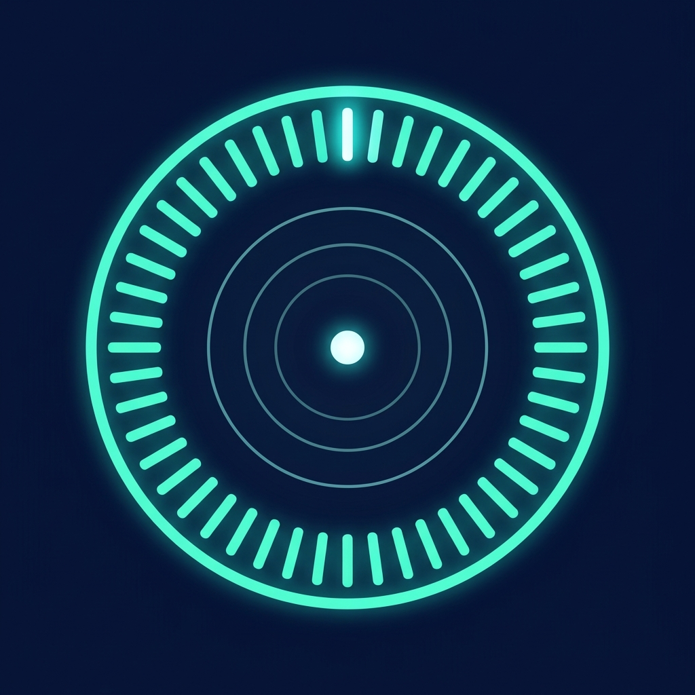

ヨビナミは、iPhone のスピーカーから標準電波と同じ信号を再現して、電波時計の時刻を合わせるアプリです。電波が届きにくい場所でも、時計を iPhone に近づけるだけで受信を試せます。
現在対応している電波は JJY（日本、40kHz / 60kHz）です。置き時計・掛け時計で受信を確認しています。腕時計は置き方しだいで合います。
時計が合った回は3回まで無料、以降は Pro（買い切り）でご利用いただけます。
ご質問・ご要望・不具合報告は、お問い合わせフォームよりお寄せください。
Yobinami plays the same kind of signal a standard-time radio station broadcasts through your iPhone's speaker, so you can set a radio-controlled watch even where reception is poor. Just hold the watch near your iPhone.
Supported station right now: JJY (Japan, 40 kHz / 60 kHz). Reception is confirmed on desk and wall clocks; wristwatches depend on placement.
The first 3 successful syncs are free; after that, Pro is a one-time purchase.
The app collects no personal data. It only queries Apple's time server (time.apple.com) over NTP to correct the clock, and sends no personal information or device identifiers. See the Privacy Policy.